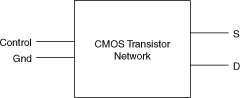
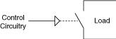

场效应晶体管 (FET) 开关由多个 CMOS 晶体管组成。向控制电路施加电压，该控制电路连接晶体管网络（负载电路）的源极 (S) 和漏极 (D)，如下图所示。

控制电路和信号路径之间没有额外的隔离，如下图所示。这种缺乏隔离将操作限制在低电压下，但它允许非常快的开关速度。

提交有关此主题的反馈。 访问ni.com/support以获得技术支持。
 提交有关此主题的反馈。
提交有关此主题的反馈。 访问ni.com/support以获得技术支持。 提交有关此主题的反馈。 访问ni.com/support以获得技术支持。
访问ni.com/support以获得技术支持。 提交有关此主题的反馈。 访问ni.com/support以获得技术支持。